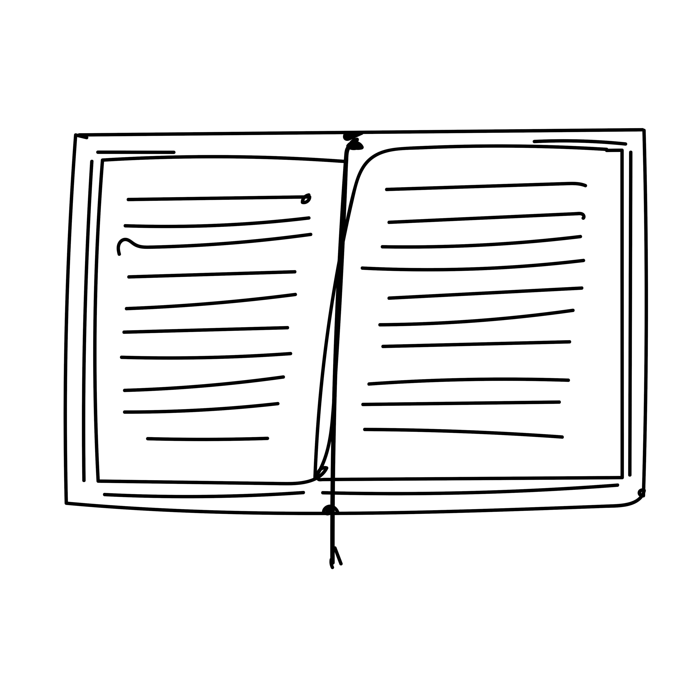

|
Mahdi Javadi I'm a Data Scientist at Fasken. I'm also a Ph.D. student in Industrial Engineering at the University of Toronto, working on multi-agent reinforcement learning and dynamic pricing. I hold an M.Sc. in Data Science and Business Analytics from HEC Montréal, an M.Sc. in Industrial Engineering from Tarbiat Modares University, and a B.Sc. in Industrial Engineering from Iran University of Science and Technology. Previously I worked at PSP Investments, Pricepoint, and TELUS. |

|
ResearchI work at the intersection of machine learning, operations research, and applied data science. My interests span reinforcement learning, dynamic pricing, forecasting, survival analysis, and healthcare analytics. Selected work below. |

|
The impact of recency and adequacy of historical information on sepsis predictions using machine learning
Manaf Zargoush, Alireza Sameh, Mahdi Javadi, Siyavash Shabani, Somayeh Ghazalbash, Dan Perri Scientific Reports, 2022 paper Developed and evaluated a BiLSTM-based deep learning framework for early sepsis prediction using longitudinal ICU data. The study shows that more recent clinical information consistently improves predictive performance, while the value of longer patient history depends on the prediction horizon, with BiLSTM outperforming six alternative machine learning methods. |
Projects |
|
Deep Learning for Recommender Systems
Deep Learning · Recommendation Systems · Personalization GitHub A comparative study of modern recommendation architectures including Neural Matrix Factorization (NeuMF), Wide & Deep, DeepFM, and the Deep Interest Network (DIN). Evaluated performance across the Douban Movie, Amazon Electronics, and ModCloth datasets, with emphasis on temporal user behavior and timestamp-aware recommendation, and on how deep neural recommenders scale across datasets of varying sparsity and size while balancing accuracy and generalization. |
|

|
Pension Fund RAG Assistant
Generative AI · Retrieval-Augmented Generation · LLMs GitHub A Retrieval-Augmented Generation (RAG) system for extracting insights from Canadian pension fund annual reports. The platform crawls reports, processes PDF content, generates semantic embeddings using sentence transformers, stores knowledge in ChromaDB, and answers natural language questions through locally hosted large language models via Ollama. |
|
 |
Scientific Paper Classification using NLP
Natural Language Processing · Machine Learning · Text Mining GitHub Machine learning pipelines for automatically classifying scientific publications into research domains using paper titles and abstracts. Explored text preprocessing, feature engineering, model selection, hyperparameter optimization, and ensemble learning for large-scale academic document classification. |
Awards
|
|
Template from Jon Barron. |